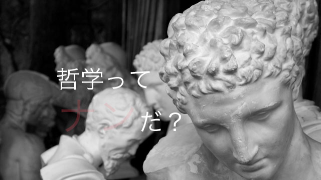

突然ですが、私は大学時代、哲学を専門で勉強していました。
皆さん「哲学」というと、どんなイメージを持ちますか？ 訳の分からない問題を、さらに訳が分からない議論で混乱させる、あまり使いどころのない学問。そんな感覚を持っているのではないでしょうか。
実際に、そのような側面はあるような気がします。難解きわまりない文章を必死で読み解いてみれば、実はなんてことはない、当たり前のことを言い直しただけだったりもします。しかし、そんな肩すかしを食らってもなお、私は哲学が大好きでした。
それはなぜか。
哲学が持つ「考え方」そのものに魅力を感じていたからです。哲学は、日常の生活の中で何気なく過ぎてしまう様々なできごとを、少し立ち止まって深く考え、余計な情報を切り捨てて、そのできごとが持つ「核の部分」を抜き出す営みです。さらに、身の回りにあるありふれたできごとやもの自体がいったい「何」なのか、原点に立ち戻って考察する営みでもあります。
最近某芸能人が麻薬所持で逮捕されました。このニュースは世間を大きく騒がせ、テレビや新聞で連日報道されています。しかし、このできごとを掘り下げていくと、いろいろな問題が浮かび上がってくるのです。
たとえば、なぜ「麻薬所持」は悪いことなのか。麻薬所持が悪いことであるのはだれでも分かっています。でも、なぜ悪いのかと改めて問われると、かなり面倒くさいことが起こってきます。社会の安定を乱すから、健康を損なうから、など、ぱっと思い浮かぶ答えもなかなかしっくりきません。社会を乱す行為は「悪」といえるのか？ 自分の体を損なう行為は「悪」といえるのか？ そうやって考えていくと、そもそも「善」とはなにか、「悪」とはなにか、という別の疑問が浮かんでくることでしょう。
このようにして、具体的な問題を抽象的な問題へと読み直し、「根本から考える」行為は、入試の国語で現在「最も求められている」行為でもあります。
抽象と具体を瞬時に読み替え、考えを深めていく訓練としての哲学的思考は、実はとても「使える」ものなのです！